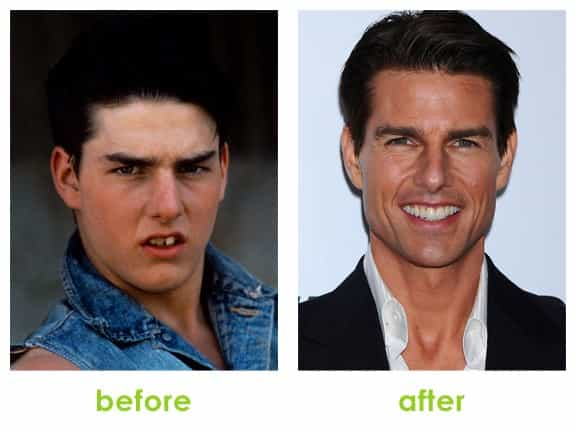
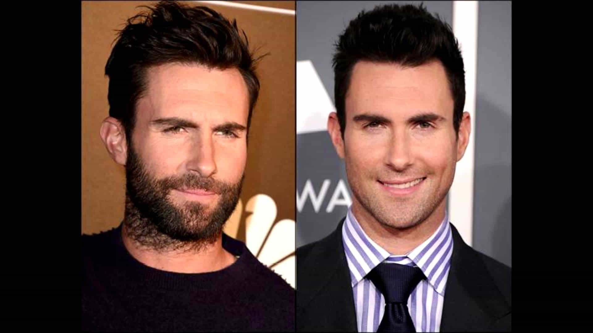
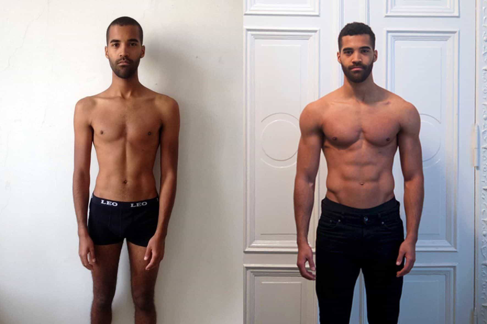
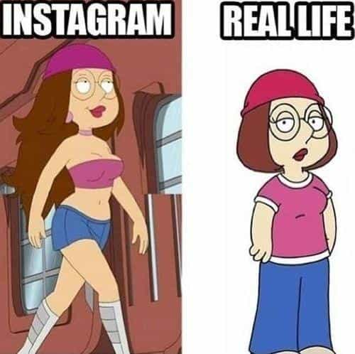

We live in the age of social media and celebrity glorification. Facebook, Instagram, and the Kardashians have effectively distorted our perception of beauty. Instagram in particular. It’s picture editing capabilities, combined with selfie manipulation techniques, falsely enhances one’s physical attributes: butts look bigger, eyes appear brighter, skin seems clearer, six-packs more defined, and so forth.
The media incessantly shoves down our throats their degenerate archetypal interpretation of beauty. Someone with an untrained eye might get the impression that everyone around them is attractive, wealthy, and living a more fun life than them. Fortunately, most people have become aware of the tricks and cheap gimmicks that are employed by attention whores to embellish their lifestyle and sex appeal. In fact, once you become privy to the illusion social media and the entertainment industry perpetuates, you come to realize that the majority of people around you, minus a very fortunate and microscopic amount, are painfully average looking.
Everyone has at least one, sometimes multiple perceived cosmetic defects according to our modern day society’s beauty standards. It’s my contention that as long as a man has no glaring or atypical physical or facial deformities; if he addresses these four physical characteristics, he’ll at a minimum be considered “not ugly”. Very often, fixing just one of these chinks in the armor can morph an ordinary looking man into a proper heart-throb. Below are four relatively uncomplicated measures that have the potential to dramatically improve one’s physical appearance.
1. Teeth & Smile

Remarkable: the mangled teeth version of Tom Cruise on literal face value alone would likely struggle on Tinder if it not for his celebrity appeal.
A study has confirmed what we already know – that a white and evenly spaced set of teeth makes people seem more attractive. But it has also explained the reason.
It is because teeth are the human equivalent of a peacock’s tail – a sign of health and genetic quality designed to help choose a mate.
A straight and white smile, devoid of missing teeth, can have a profound effect on a person’s overall presentation and mating opportunities. Nobody enjoys a trip to the dentist. It’s an uncomfortable and costly experience. Despite this, biting the bullet and investing in your mouth is a worthy expenditure. Not only because of the cosmetic benefits it can provide a person with, but because it’s your teeth for crying out loud; healthy chompers are an essential component for your overall health and quality of life.
2. Hairstyle & Grooming
Depending on who you ask, women have a distinct advantage over men in regards to beauty routines; they have many more variables that can be controlled and manipulated to bolster their look. Men only have a few things that can be amended to enhance their appearance: physical fitness, skin, apparel, hair, and that’s about it. It always puzzles me when I see a guy that puts very little thought into his haircut and style. Sure it costs a little bit more to get a good haircut, but the benefits are undeniably worth the premium.
You wear your hair every day. A cheap or unflattering haircut is evident—a great haircut makes people take notice. Additionally, if you aspire to be put in leadership positions, you’ve got to look the part. A good haircut will provide the confidence you need to help you make a strong and memorable first impression.
Lastly, if your hairline is receding substantially or if you’re just flat-out going bald, you’re better off just shaving it off. Yes, I understand having to say goodbye to what’s left on your head can be heartbreaking, but adopting a George Costanza style is unlikely to do you any favors. Luckily, guys like Jason Statham, Joe Rogan, and Dwayne Johnson have popularized the look; there are lots of women that actually find the shaved head look sexy and masculine.

Adding some scruff or even better, a beard, is one of the best decisions a man can make for his love life. Facial hair makes a man look more rugged, mature, and can help conceal a weak jaw. Just make sure you keep it neat and well-groomed. The unemployed hobo and low testosterone neckbeard style as seen below is rather pitiful and unsightly to look at.
This man probably justifies his repulsive appearance by telling his friends that women don’t matter to him because he has chosen to “go his own way”.
3. Apparel & Style

ill-fitting off the rack clothing can make you appear sloppy and larger than you really are.
They say clothes make the man. While that might be an overstatement, clothes can have an immense impact on your overall appearance and the way people perceive you. There’s an allure and magnetic force at work when a man wears a form-fitted suit, similar to how heels and a tight black dress on a woman draws in the attention of a room full of people; men who dress well and wear the correct fitting garments for their body type are seen as higher status and more attractive according to research.
According to the study conducted by Kelton Research, not only are well-dressed men viewed as sexier, smarter, more successful, and more well-liked, they also fare better in relationships. In fact, 91 percent of Americans think dressing well can make a man appear to be more physically attractive than he really is, while nearly two-thirds (64 percent) believe women are more likely to marry a well-dressed man than one who isn’t as put together.
You don’t need to spend a fortune to dress the part—quality over quantity. Spending a little extra money to get higher quality apparel is worth it. Superior clothing will fit better, last longer and therefore save you money in the long-haul. Finally, never skimp on your shoe game. Things that you use every day such as footwear should be of good quality—shoes have the potential to make or break your outfit.
I still see guys at the club deploy this combination…
4. Body

Muscles transformed this man from soy boy to fuck boy.
Quite possibly the most significant thing a man can do to improve his overall appearance is hit the weight room. Just like how men are attracted to big boobs, women are attracted to big muscles. If you’re a man that does not have the most attractive facial features improving your physical stature is one of the best investments you can make. Akin to how a man will sleep with a girl that has a knockout body despite not having the best face; a women will screw the butter-faced herculean man that works construction because muscularity is associated with high testosterone. In fact, studies show that meatheads are responsible for the bulk of “cuckolding”.
Male peacocks show their good condition with their showy tail,” says David Frederick of UCLA’s Center for Behavior, Evolution and Culture, a Ph.D. candidate who was lead author of the study. “Muscularity in humans is similar because it requires calories, testosterone, and a strong immune system. It’s telling women, ‘Hey, look at me — I must be in good condition.'”
Those muscles also tell women to forget about their man at home — at least for a night. The research showed that 32 percent of men defined as muscular are twice as likely to have been with a woman while she was in a relationship.
You don’t need to become a bodybuilder, but packing on a little muscle to your frame can do wonders to your sexual desirability. Muscles increase testosterone, garner the respect of other men, improve posture, raises self-esteem, helps improve the fit of clothing, and just overall makes you visually appear more alpha. You’re a fool if you are not taking advantage of this easy hack.

Conclusion
As stated in the introduction. Once you remove the curtain that is social media, you’ll notice most people are bang average. Improving these four cosmetic facets has the potential to dramatically augment your sexual appeal, which will consequently raise your market value.
With the current state of affairs, success in the marketplace can seem unattainable. With such stiff competition, your success is in this climate can largely be determined by the smallest of margins; life is a game of inches. Therefore, it should be your obligation to make sure you mitigate your vulnerabilities—that way you lend yourself the best odds for achieving success.
Read More: More Men Are Raped Every Year Than Women